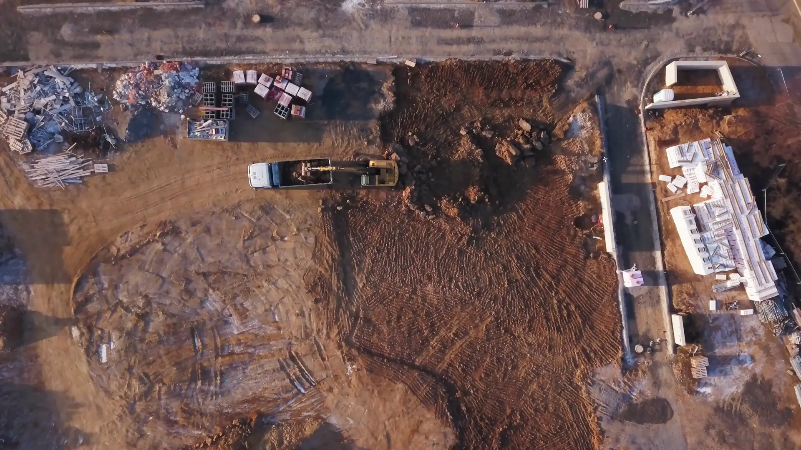
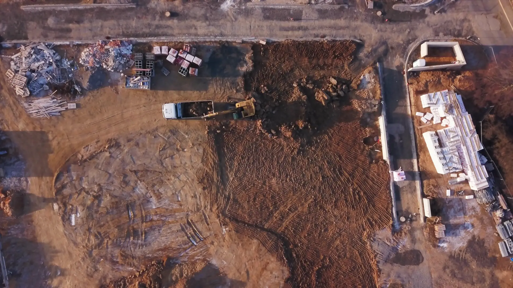
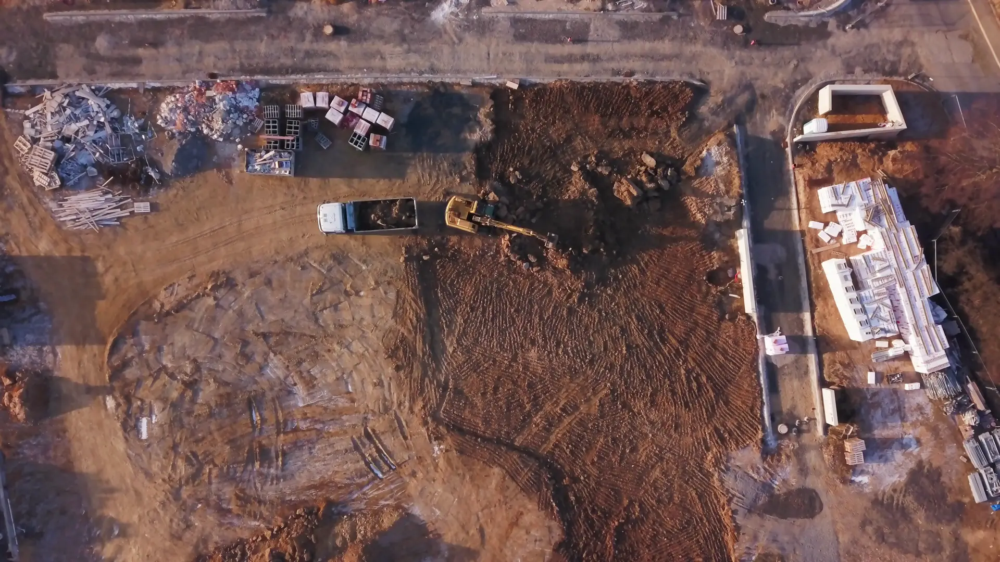
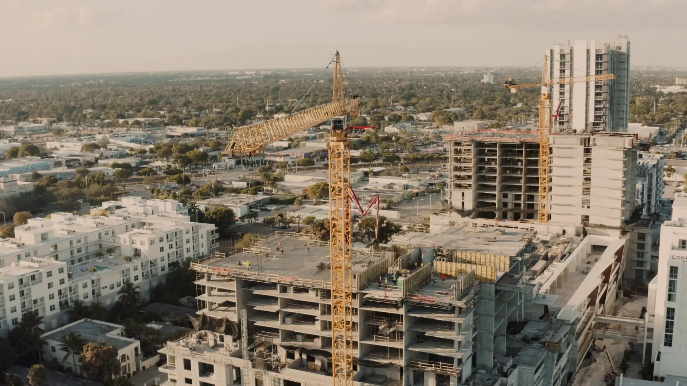
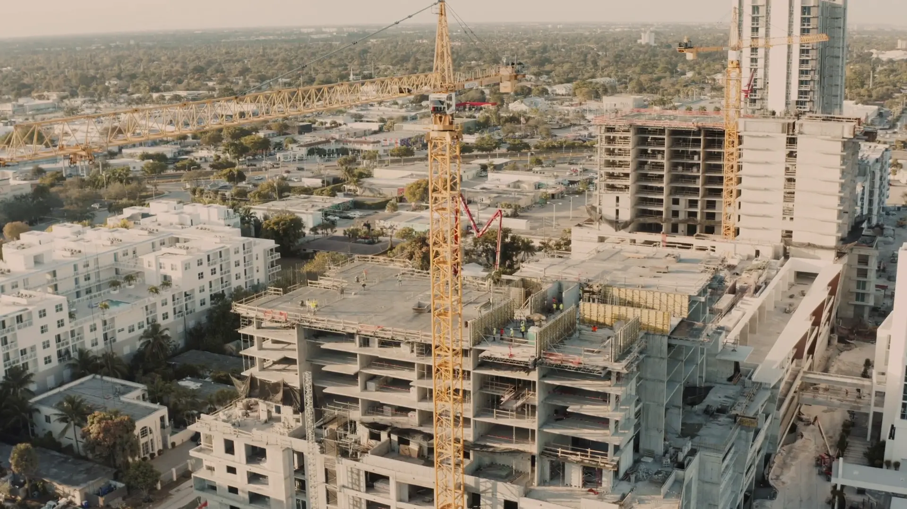
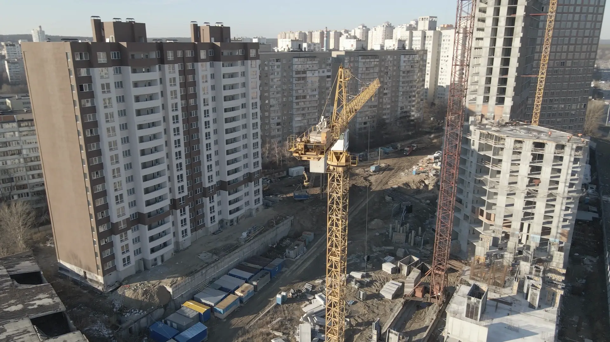

«В строительстве репутация создаётся не обещаниями, а выполненными обязательствами. Мы стремимся стать подрядчиком, которому можно передать сложный участок работ — и быть уверенным, что компания доведёт его до результата.»
Заречный Сергей Вадимович — основатель и исполнительный директор
Пришлите проектную документацию, узлы и ведомость объёмов — подготовим коммерческое предложение в течение недели. Предварительный расчёт бесплатный, специалист выезжает на объект для осмотра и уточнения условий.
Член СРО · гарантия на выполненные работы по договору
Запросить расчёт